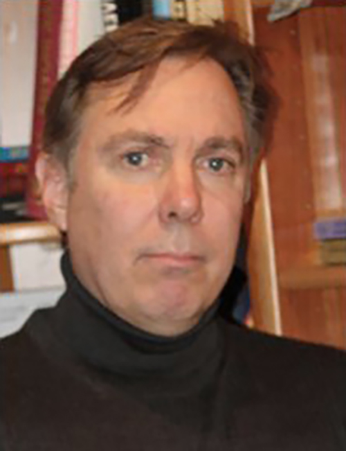

About Chas Holloway
Charles (Chas) Holloway is the discoverer of the Freedom-Constraint (FC) equation and process, a new way to calibrate, optimize and control systems.
FC grew out of earlier work he did on Free World Theory, a scientific project that applies scientific reasoning to the understanding and optimization of human societies. He is the author of Free World Theory: A Solution for a Failing World, and also authored the Constitution of the Chiricahua Apache Mimbreno Nde Nation in Texas/New Mexico. He serves on the Board of Directors of Liberland.
Earlier in his career, Holloway worked extensively in popular media as a writer, publisher and producer. Over the years, he has worked on projects with Theodore Sturgeon, Harlan Ellison, George Clayton Johnson, Clive Barker, David Valdes, the Rod Serling Literary Estate, William F. Nolan, Danny Simon, John Truby, Michael Shermer, and even Weird Al Yankovic.
Chas Holloway was born in La Jolla, California, and is the grandson of aviation pioneer Reuben H. Fleet, founder and president of Consolidated Aircraft Company, the largest producer of B-24 Liberator bombers during World War II.